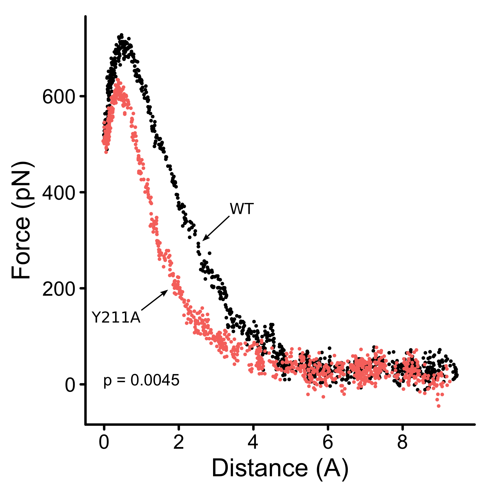

Research
Science
In general, I work to build predictive models of protein evolution. I am particularly interested in the way protein structure constrains and determines evolution, the evolution and epidemiology of viruses, the way evolution and epidemiology are connected, the tools and models that are used to study evolution, and how large datasets can be used to forecast the emergence and evolution of viruses.
Here is a word cloud generated from the text of my first author papers. I think it does a good job outlining what I worked on during my PhD.

Software
In addition to my scientific research interests, I am interested in scientific computing, open science, and computational statistics. I know and program in Python, R, Bash, and C++ as well as some intermittent Mathematica, Matlab, and Tcl/Tk. In addition, the Wilke lab maintains a public git repository of the one-off tools we’ve produced for various projects… https://github.com/clauswilke/WilkeLabProteinEvolutionToolbox.
If there is any piece of software that seems related to what we do but is not in the repository I may have it laying around or it may be in a github repository for one of our papers.
Current Work
Currently I’m in medical school. I try to be as involved as I can be with research. There are two manuscripts that are currently under review that I contributed to.
Past Work in the Wilke Lab
Time dependence of evolutionary metrics during an emerging influenza virus outbreak
For example, here is a plot of the molecular clock rate versus time. It shows the molecular clock rate of the hemagglutinin protein during the first 25 months of the 2009 pandemic flu outbreak. This work appeared in the journal Virus Evolution.
Molecular clock rate computed by BEAST for pH1 hemagglutinin and pN1 neuraminidase from the pH1N1 outbreak. In panel A, we show the molecular clock rate over time for pH1, and in panel B we show the molecular clock rate over time for pN1. The error bars represent the HPD 95% of the mean, as reported by BEAST. The plot shows a four-fold decline in the substitution rate estimates from single month of data to 25 months of aggregated data. Further, the molecular clock HPD 95% for the first 2 months of data, for both pH1 and pN1, does not overlap the final clock rate, indicating that these early estimates are in no way representative of the long-term estimates.Predicting viral evolution
By combining techniques from bioinformatics, statistical mechanics, biochemistry, molecular biology, and genetics it may be possible to predict the path of viral escape from host challenges. To accomplish this we can narrow the field of possible mutations with evolutionary intuition and bioinformatics, build a data set for training an in silico evolutionary algorithm, and test our resulting predictions experimentally.
Our first foray into the field is to use steered molecular dynamics to pull apart the two proteins in a complex several dozens times and calculate the force that was required to successful separate the complex.
The curve is generated with an anchored receptor and a force applied to the viral spike protein in our test system. The plot shows the average interpolated force over the replicas with p-value for difference in maximum force in the bottom left. This work combines folks from Wilke, Ellington, and Sawyer lab. This article has been published in PeerJ and is available here.
Biophysical constraints on protein coding sequence evolution
On a whole genome scale, a direct correlation between relative solvent accessibility (RSA) of sites (amino acids) in proteins and the rate of evolution (measured as rate of non-synonymous versus synonymous substitutions) at that site was established previously here, providing a reasonable model for (relatively) neutral mutations.
Fitting the rate versus RSA curve one can find sites that differ significantly from neutrality, then, compare the predictions to the current state-of-the-art methods for functional predictions. Results from this work was published in two separate articles appearing here in Molecular Biology and Evolution and here in Philosophical Transactions of the Royal Society B.
Past Work in the Barrick Lab
Population evolutionary simulator
Written in C++, bpopsim, has the ability to output several useful statistics regarding organismal evolution. It may be reasonable to compare this to something like the relative frequency of simultaneously sweeping mutations in a laboratory evolution experiment.
Below are some preliminary results from my test runs with bpopsim. The genotype frequencies plot was assembled and plotted in R.
Past Work in the Sutton Lab
My master’s work, in structural biology, was completed in the lab of Dr. Bryan Sutton at Texas Tech University Health Sciences Center in Lubbock, TX. I crystallized several novel constructs of the human proteins Synaptotagmin-1 and Dysferlin; I also used fluorescence spectroscopy to measure the potential for calcium binding of each domain in the proteins.